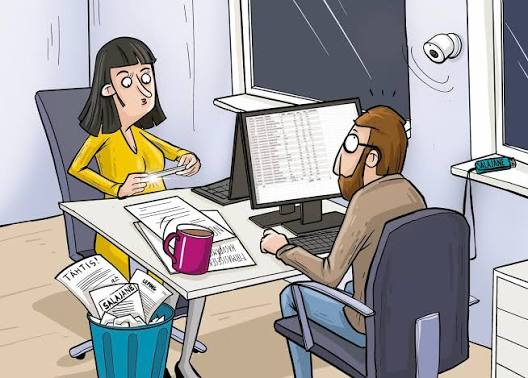

Kohvitassi pildikaart
Klõpsa pildil mõne ala peale, et lugeda selle kohta selgitust.

Kohvitass
Kohvitass annab tööpäeval väikese pausi ja võimaluse puhata. Kuum jook tuleb asetada kindlale alusele, et vältida dokumentide ja tehnika kahjustamist.
Kaamera
Seinal olev kaamera aitab ruumi turvalisust jälgida. Kaamera kasutamisel tuleb austada inimeste privaatsust ja anda neile teada, miks salvestisi tehakse.
Monitor
Monitoril kuvatakse töö tegemiseks vajalik info, näiteks tabelid ja dokumendid. Sobiv ekraani kõrgus aitab vähendada silmade ja selja koormust.
Prügikast
Prügikastis on kasutatud paberid ja muu kontoris tekkinud prügi. Jäätmete sorteerimine aitab materjale uuesti kasutada ning hoiab tööruumi korras.
Kohvitass
Kohvitass annab tööpäeval väikese pausi ja võimaluse puhata. Kuum jook tuleb asetada kindlale alusele, et vältida dokumentide ja tehnika kahjustamist.
Telefon
Telefoniga saab kolleegidele helistada ja tööasju kiiresti kooskõlastada. Tööruumis on viisakas arvestada teistega ning hoida vestluse heli mõistlikul tasemel.
Mälupulk
Mälupulk on väike seade failide salvestamiseks ja transportimiseks. Olulisi või isikuandmeid sisaldavaid faile tuleb hoida turvaliselt.